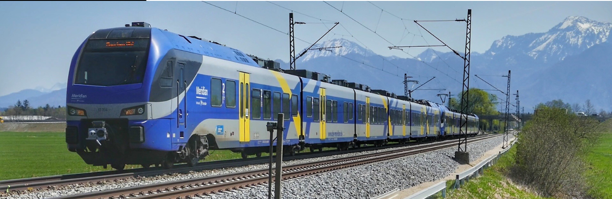

When a critically ill patient needs to travel hundreds of kilometres for advanced medical care, the journey itself becomes a medical challenge. Save Life Wellness provides Train Ambulance Service in Kolkata that doesn't just transport patients — it extends the hospital environment onto the tracks. With a dedicated ICU medical team, full life-support equipment, and end-to-end coordination from Howrah to the destination hospital, we have safely shifted over hundreds of critical patients across India. This is not just ambulance service. This is mobile critical care — engineered for the journey.
Kolkata sits at the heart of Eastern India's railway network. Three major stations — Howrah, Sealdah, and Santragachi — connect the city to every major metro and medical hub across India. For families facing a medical crisis, this is an enormous advantage.
Air ambulance costs between Rs. 6–12 lakhs per transfer. Road ambulance becomes physically impossible beyond 400–500 km. Train ambulance fills this gap — offering ICU-level care at 50–60% lower cost than air transport, with the stability of a smooth, long-distance journey that doesn't exhaust a fragile patient.
But the key question families always ask us is: "Is my loved one stable enough for a long train journey?"
That's exactly the wrong question — because with Save Life Wellness onboard, the train becomes an extension of the ICU. The real question is: "How fast can we arrange it?"
Most services say they "handle everything." We want to show you exactly what that means for us, step by step, because we believe transparency is the first step in building trust during a crisis.
When you call us at +91-8083309381, you are not speaking to a booking agent. You are connected directly to a medical coordinator with clinical background. We collect:
Based on this, our in-house doctor makes a transfer fitness assessment within 30 minutes. We tell you honestly whether train transfer is safe for your patient right now, or whether stabilisation is needed first. This is a step most services skip — and it's why transfers sometimes go wrong.
Not all trains are equal for medical transfers. We evaluate:
A patient shifted from Kolkata (Howrah) to Delhi AIIMS via Rajdhani Express is not the same logistical operation as a shift to CMC Vellore via a southern-bound express. We plan each case individually.
Our paramedic team arrives at the station 1–2 hours before departure to transform the reserved compartment. Here is what goes in:
Every piece of equipment is tested and calibrated before the patient boards. We do not assume anything works — we verify it.
The hospital-to-station transfer is often the most overlooked and most critical part of the journey. We deploy a fully equipped road ICU ambulance to shift the patient from their hospital bed in Kolkata to the railway compartment, and similarly from the destination railway station to the receiving hospital or home.
Our paramedic travels in this ambulance too, ensuring no gap in monitoring between the hospital and the train.
We coordinate directly with the treating hospital's nursing team for a structured handover — vital signs, active medications, IV access points, and any alerts are communicated formally, not casually.
A family in South Kolkata recently needed to shift their 68-year-old father — a ventilator-dependent cardiac patient — from a private hospital near EM Bypass to a super-specialty hospital in Delhi. Our road team reached the hospital, coordinated with the ICU team, loaded the patient onto the road ambulance with the ventilator running, and reached Howrah Station 90 minutes before departure — without a single lapse in respiratory support.
During the train journey, our onboard doctor and paramedic conduct structured monitoring:
We have managed mid-journey cardiac events, sudden desaturation episodes, and medication-related reactions — and handled them on the train, without requiring an emergency stop, because our team was prepared and equipped.
On arrival, we do not hand the patient to the family and leave. A pre-arranged road ambulance from our network receives the patient at the destination station and transfers them directly to the receiving hospital. We coordinate with the hospital's ICU admission desk in advance so the bed, equipment, and receiving team are ready.
The full clinical handover — including journey vitals, medication administered during travel, and any events during transit — is communicated to the receiving medical team formally.
For patients with cardiac, neurological, respiratory, multi-organ, or post-surgical conditions requiring continuous life support. Full ICU equipment + MD/MBBS doctor + senior paramedic onboard.
Specialised cardiac monitoring including continuous ECG, defibrillator readiness, and cardiac medication management for patients with heart failure, post-MI, or arrhythmia conditions.
Neonatal cases demand the highest precision. We deploy a portable incubator with temperature control, neonatal ventilator, pulse oximetry calibrated for infants, and a paramedic trained specifically in neonatal care. We have successfully shifted premature infants from Kolkata to specialist neonatal units in Delhi and Mumbai.
Paediatric ICU transfers require child-specific equipment and dosing. Our team uses paediatric ventilators, weight-based drug protocols, and child-appropriate monitoring to ensure the smallest patients receive the same standard of care as adults.
Many services hesitate on ventilator cases. We specialise in them. Our portable ventilators carry independent battery backup of 6–8 hours in addition to the train's onboard power. We have shifted ventilator-dependent patients on journeys of 24–36 hours without interruption.
This is the most common concern we hear. The honest answer: a well-prepared train transfer with ICU monitoring is safer than a rushed road transfer over 600 km, and more stable than a turbulent air transfer for some fragile patients. The key is preparation — which is exactly why our assessment step exists.
Our doctor and paramedic are trained for in-transit emergencies. We carry crash medications and a defibrillator. In the unlikely event of a serious deterioration, we coordinate with railway staff and local hospitals near the route. We have handled mid-journey emergencies and stabilised patients without requiring emergency deboarding.
We monitor train status from the moment of booking. If a delay occurs, our team stays with the patient and manages care at the station. If a cancellation occurs, we activate our contingency plan — alternative train or emergency road-air escalation — within 60 minutes of confirmation.
Many private health insurance policies cover medically necessary inter-city patient transfers. We provide complete documentation — medical transfer justification letter, equipment list, and expense breakdown — to support your insurance claim. We recommend checking your policy's outpatient transfer clause, and we can assist with paperwork.
Train ambulance from Kolkata is typically 50–60% more affordable than air ambulance for the same route. The final cost depends on distance, ICU equipment required, train class, and journey duration. We provide a transparent quote within 30–60 minutes of your call — with no hidden charges.
We regularly facilitate patient transfers from Howrah, Sealdah, and Santragachi stations to:
For outgoing transfers, we work with nursing and ICU teams across Kolkata's leading hospitals to ensure structured, medically supervised handovers:
Our commitment to excellence has earned us the trust and gratitude of many families in Kolkata. Here are some testimonials from those who have experienced our service:
Mr. Rajesh Kumar: "The train ambulance service was a lifesaver for my father. The medical team was professional and caring, and the journey was smooth and comfortable. I highly recommend their service."
Mrs. Anjali Sharma: "I was worried about transferring my critically ill mother to a specialized hospital in another city. The train ambulance service provided by this team was outstanding. They took care of everything, and my mother received excellent care during the journey."
For reliable and efficient Kolkata train ambulance service, contact us today. Our team is ready to assist you with any medical transportation needs.
In times of medical emergencies, trust our train ambulance Kolkata to be your lifeline on rails. We are dedicated to providing the best care and ensuring the safe and timely transportation of patients. Choose us for peace of mind and exceptional service.
In most cases, we can complete medical assessment, train booking, and equipment mobilisation within 12–24 hours. For urgent cases, we work to the earliest available departure from Howrah, Sealdah, or Santragachi.
Yes. We specialise in ventilator-dependent transfers. Our portable ventilators carry 6–8 hours of battery backup independent of train power, and we verify onboard power availability before selecting the train.
We exclusively book 1st AC or 2nd AC berths. Our team arrives 2–4 hours before departure to install and calibrate all ICU equipment before the patient boards.
Costs depend on distance, ICU setup required, and journey duration. Train ambulance is typically 50–60% cheaper than air ambulance for the same route. We provide a transparent quote within 30–60 minutes of your enquiry — no hidden costs.
Yes. One or two attendants can travel in the same compartment with the patient. Additional family members may travel in adjacent coaches. We assist with attendant ticket coordination.
Completely. We manage IRCTC booking, railway authority coordination, equipment clearance, and all medical documentation — including transfer letters for the receiving hospital.
Yes. We operate 24 hours a day, 7 days a week, 365 days a year. Our medical coordinator is always available on call.
We are based at 4C, 4th Floor, Suraj Trade Centre, Kankarbagh, Patna, Bihar — with operations teams deployed across Kolkata for rapid ground response.
What separates Save Life Wellness from other services is not the equipment list — competitors have equipment too. It is the clinical discipline behind every transfer: the pre-assessment that prevents poor decisions, the power-verified train selection, the compartment preparation 2–4 hours in advance, the 30-minute vital monitoring cycle, and the formal hospital-to-hospital handover that ensures nothing is lost in transition.
When your family is in crisis, you don't need promises. You need a medical team that has done this before, planned for what can go wrong, and is already on the way.
Available 24/7 | ICU / CCU / NICU / PICU Equipped | Doctor & Paramedic Onboard | Bed-to-Bed Transfer | PAN India from Kolkata